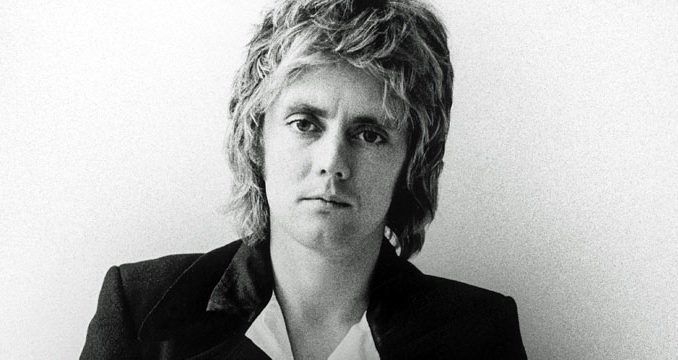

|  |
ROGER TAYLOR
( Guitarrista, baterista y vocalista) |
| Nombre de Nacimiento |
Roger Meddows Taylor |
| Nacimiento |
26 de julio de 1949 en Reino Unido King's Lynn, Norfolk, Inglaterra |
| Edad |
71 años |
| SOBRE SU VIDA |
| Primeros Años |
Se trasladó a Truro a la edad de 8 años. En 1965 Roger se unió a su primera banda, llamada Johnny Quale and The Reaction.
Cuando el vocalista Johnny Quale abandonó el grupo, Roger pasó a ser el vocalista y el grupo comenzó a llamarse simplemente
The Reaction, que duró hasta julio de 1968. Ese mismo año se trasladó al London Hospital Medical School de Londres,
donde comenzó sus estudios de odontología. Posteriormente abandonó la carrera para estudiar biología en el North London
Polytechnic. Dentro de Queen fue una de las voces más influyentes y con peso a la hora de tomar decisiones, tanto artísticas
como empresariales. |
| Carrera Artistica |
En algunas canciones como solista actuó como guitarrista y vocalista. Ha escrito canciones famosas de Queen como "Sheer
Heart Attack", "I'm In Love With My Car", "Radio Ga Ga" o "A Kind of Magic". También escribió otras como "Breakthru"
o "Innuendo" junto con Freddie Mercury. La revista Rolling Stone ubicó a Roger Taylor en el puesto 14 de su lista de los
mejores 100 baterías de la historia, por lo que según la revista mencionada Roger es el 11° mejor batería vivo, ya que 3 de
los baterías que están entre los primeros 13 fallecieron (1° John Bonham, 6° Keith Moon, 11° Cozy Powell). Además ocupa
el 8° puesto de los 30 baterías más ricos del mundo, con 105 millones de dólares.4 Taylor Hawkins, batería de Foo Fighters,
ha afirmado que Roger es uno de los baterías más influyentes en la historia de la música. |